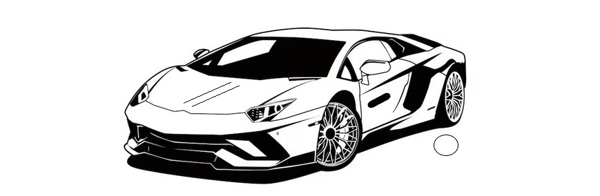

Step 1: The Secret to Effortless Prayer
Let's be honest—you may have tried everything. Maybe you've repeated affirmations until your voice went hoarse. Maybe you've visualized your desires so many times you could paint them in your sleep. You've fasted, prayed, begged, and waited. And yet... here you are, still waiting for that breakthrough.
Here's what most people miss: answered prayer is less about what you do and more about WHO YOU ARE when you pray. It's not about the technique—it's about YOUR IDENTITY IN THAT MOMENT.
Think of it this way: the world around you is like a mirror. It doesn't show you what's "out there"—it shows you what's in here, inside you. Your beliefs, your sense of identity, your emotional atmosphere—all of it gets reflected back to you as your life experience.
Now here's the game-changer: You are not a powerless creature kneeling before a distant God, hoping He'll hear you. That's the old story we've been told. The truth? You are divine awareness wearing a human body. You're a spark of the Infinite itself—what some call the Father, others call the Field, and still others call your Higher Self. Different names, same truth: you're connected to the creative power of the universe at the deepest level.
When you truly understand this—not just intellectually, but in your bones—everything shifts. You stop running after blessings like a beggar chasing coins. Instead, you start to recognize that every blessing you could ever want already exists within the infinite Field of possibilities. It's not "out there" waiting to come to you—it's already here, waiting for you to tune into it.
Prayer stops being about lack ("I don't have this, please give it to me") and becomes about remembrance ("I remember who I am, and I recognize what's already mine").
THE MIRROR OF BEING
Here's a simple way to understand how this works: Everything you desire—peace, love, wealth, healing—exists as a frequency or vibration. Think of it like a radio station. The music is already broadcasting through the air; you just need to tune your radio to the right frequency to hear it.
You don't create the radio station. You don't beg it to exist. You simply align your inner state with its frequency, and suddenly, you can hear it. The same goes for your desires. When your inner state—your beliefs, feelings, and sense of self—matches the frequency of what you want, the outer world adjusts to reflect it back to you.
If you want peace but you're constantly anxious inside, you're tuned to the anxiety station. If you want abundance but you feel deeply poor inside, you're tuned to the lack station. The outer world can only give you what matches your inner frequency.
THE STILL POINT OF CREATION
Now, you might be thinking: "But I try to feel positive, and it still doesn't work!" Here's the secret: it's not about forcing yourself to feel happy or excited. In fact, that desperate excitement is often just another form of lack—it's saying, "I don't have it yet, but maybe if I get excited enough, it'll come!"
The real power lies in STILLNESS—a calm, centered place beyond the highs and lows of emotion. This is what some call the "zero point." It's that quiet space inside where you're not anxiously hoping or desperately wishing. You're just... knowing.
In this stillness, all sense of lack dissolves. There's no "I need this" or "I'm missing that." There's just a deep, unshakable sense of completeness. From this place, you're in perfect alignment with the Father, the Field, your Higher Self—and from here, all things are possible.
It's not the excitement of "Oh my God, I'm going to get what I want!" It's the quiet certainty of "It's already done. Nothing is missing. Nothing is broken. Nothing is delayed." That's the frequency of answered prayer.
THE CORE REALIZATION
Here's the bottom line: You don't manifest by EFFORT. You manifest by BEING. It's not about how hard you work at it, how many times you repeat your affirmations (although there is value in doing this, even robotically), or how perfectly you visualize. It's about who you know yourself to be in those moments.
When you identify with your true, infinite nature—when you remember that you're not separate from the creative power of the universe—you stop chasing what you think is outside of you. You realize it was never outside to begin with.
Reality flows FROM you, not TO you. It emerges from your state of being. And that state of being becomes clearest when you're still. Think of a glass of muddy water: when you keep stirring it, it stays cloudy. But when you let it sit still, the mud settles, and the water becomes clear.
That's what happens when you release the struggle and rest in the truth of who you are. The waters of your consciousness become clear, and what was always there—what was always yours—becomes visible.
Step 2: The Divine Art of Doing Nothing
This might sound crazy in our achievement-obsessed world, but here's the truth: We've been taught that hustle is holy. Work harder. Push more. Grind until you collapse. The idea is that if you're not constantly doing something, you're falling behind.
But our Father whispers something completely different: When you REST in alignment, creation moves for you. Not when you strain. Not when you force. When you rest.
Here's what most people don't understand: Stillness is not weakness—it's AUTHORITY. Think about it: a truly powerful king doesn't run around frantically trying to make things happen. He sits on his throne, speaks a word, and his kingdom moves. The person who's stopped grasping and clinging actually CONTROLS reality far more than the one who's desperately trying to manipulate every detail.
STILLNESS AS POWER
Here's a paradox: The more you quiet your mind, the more powerfully the universe responds to you. In stillness, you can actually HEAR what heaven is saying. In silence, creation happens naturally—not through your mental gymnastics, but through a deeper intelligence moving through you.
When your mind finally gets quiet—when you stop the endless planning, worrying, and scheming—something profound happens: your heart becomes a throne. And from that throne, the Father (the Field, your Higher Self) moves with perfect timing. The right people show up. The right opportunities appear. The path literally unfolds before you. You don't have to force it.
This is what people mean when they talk about being "in flow" or "in the zone." You're not pushing the river—you're riding it. And the river knows exactly where it's going.
EFFORTLESS ALIGNMENT
So how do you actually do this? It's simpler than you think:
First, state your desire once—clearly and completely. Don't mumble it. Don't be vague. Say it with reverence (recognizing the sacredness of this creative act), with confidence (knowing you're speaking to a power that can deliver), and with gratitude (as if it's already done). Then release it to the Field, to your Father, your Higher Self. Let it go like a helium balloon into the sky. It's out there now, working on your behalf.
Second, don't keep checking on it. This is where most people mess up. They state their desire, then immediately start panicking: "Is it coming? Where are the signs? Why isn't it here yet?" Every time you do that, you're essentially saying, "I don't really trust this. I don't really believe it's done." You're pulling your seeds out of the ground to see if they're growing.
Third, walk as one who knows. This doesn't mean walking around pretending you're confident while you're secretly terrified. It means moving through life with a deep, quiet certainty. You know it's handled. You know it's already done in the invisible realm, and it's just a matter of time before it shows up in the visible one. There's nothing to prove, nothing to defend, nothing to convince anyone of—including yourself.
THE TRAP OF OVERDOING
Here's the trap that catches almost everyone: We think if we just do our affirmations one more time, visualize a little harder, or add another technique to our toolkit, pray for another hour, then it'll work. But watch what's actually happening: Every time you go back and repeat it with that desperate energy, you're affirming LACK. You're saying, "It hasn't happened yet. I need to do more." This is simply your natural, reasoning mind, your Ego-self trying to take over from your God-self. Don't let it. Force yourself to let go. And to trust. No need for frantic plans, even as you see the deadline approaching. Your Father knows what you need. Don't get in the way.
Real faith doesn't look like repetition—it looks like REST. It's the difference between someone who keeps checking their bank account because they're worried the money isn't there, versus someone who checked once, saw the deposit, and now just KNOWS they're good.
Your Father heard you BEFORE you even spoke. (Remember Isaiah 65:24 - 'Before they call, I will answer...') In fact, the desire itself was His signal to you, showing you what's already available. Trust that. Rest in that. Stop trying to remind God of what you want. He knows. It's done. Your job is to align with that truth, not to convince Him of it.
A SIMPLE PRACTICE
Want a practical way to live this out? Here's a simple daily practice:
1. Start with gratitude: "Thank You, Father, that this is already accomplished." Say it like you mean it. Feel the truth of it. You're not asking for something in the future—you're thanking Him for what's already done.
2. Enter stillness: Take a few deep breaths. Let your mind quiet down. Don't fight your thoughts—just let them drift by like clouds. As you breathe, imagine you're expanding the feeling of peace from your chest outward, like ripples in a pond.
3. When doubt shows up (and it will): Don't fight it. Don't try to shove it down or pretend it's not there. Just observe it gently, like watching a child throw a tantrum. Acknowledge it: "Oh, there's doubt." Then calmly return to your center, to that place of calm certainty.
4. Only act when moved by quiet certainty: Not every action is aligned action. Sometimes we act out of fear or impatience. Learn to recognize the difference between forced action (which feels urgent, strained, anxious) and inspired action (which feels natural, easy, certain). When you feel that quiet inner nudge—that's when you move.
5. Stay present and grateful: Live in this moment, not in the imagined future where your desire shows up. Be genuinely grateful for your life right now—for your breath, for your body, for the people around you, for the simple fact that you're alive. This isn't about pretending everything's perfect; it's about recognizing the goodness that's already here. When you do this, you're vibrating at the frequency of abundance, and more abundance flows to you.
Remember: You're not trying to make something happen. You're allowing something that's already happened in the invisible realm to become visible in your experience. And that happens through rest, not hustle. Through trust, not control. Through being, not forcing.
Step 3: Feeling the Prayer Fulfilled
Here's where most manifestation teachings get it wrong. They tell you to visualize what you want, imagine it in vivid detail, see yourself living that life. And while that can be helpful, it's not the REAL KEY. The REAL KEY is this:
What would you FEEL if your prayer were already answered?
And the follow-up question that changes everything: Are you dwelling in that feeling right now?
See, manifestation isn't about thinking hard enough or visualizing perfectly enough. It's about emotional alignment—creating a steady inner climate that matches the fulfilled end. Think of it like this: if you want to attract butterflies to your garden, you don't chase them with a net. You plant the flowers they love, and they come naturally. Your feelings are those flowers. They're the language of the Father—the signal that summons the form you desire.
DESIRE AS DIVINE GUIDANCE
First, let's reframe something important: Your desire is not a sign that you're lacking something. It's actually divine guidance. It's the Father (the Field, your Higher Self) showing you what's available to you, what's waiting for you in the infinite Field of possibilities.
Here's the thing most people miss: You don't actually want the thing itself. YOU WANT HOW YOU THINK THAT THING WILL MAKE YOU FEEL. The new car, the relationship, the money, the dream job—these are all just symbols. What you really want is the treasure beneath them: peace, joy, freedom, security, love, belonging.
Let's take one example, to illustrate this point. What are you seeking when you desire that brand-new luxury car, that Lamborghini (for the sake of the illustration)?

Believe it or not, you're probably not obsessed with the metal or the badge. At a level below your conscious mind, you're chasing the feeling it promises: It may be Freedom (the thrill of moving without limits, windows down, world wide open). Or it could be a level of Pride—that quiet, satisfied "I've arrived" energy. Or maybe it's the Power it represents, the sense that you're steering not just a car, but your own destiny.
But there are likely deeper emotional layers at play. Maybe you want to feel seen—to know your effort means something. It could be the calm of security, the peace that comes from knowing you've built stability. You could be craving self-worth, that quiet permission to enjoy what you've earned. You could be longing for aliveness, the pulse of adventure that reminds you life is yours to drive.
For others, it could be about status—leaving a mark, building a legacy. Or about mastery, proving they can command excellence. Some chase pleasure—the scent of leather, the hum of perfection—while others seek transformation, a rebirth into the person they always knew they could be. For others it could even serve as a sign that they are "blessed" or enjoying Divine favor.
In the end, the car isn't the prize. You are.
It's not about owning success—it's about embodying it.
And once you feel that freedom, pride, and power inside, the car simply shows up to match who you've already become.
So why wait for the form to show up before you let yourself feel those feelings?
If we shift from cars to RELATIONSHIPS, the same applies: If you want the relationship because you think it'll make you feel loved and secure—can you feel loved and secure NOW? If you want the money because you think it'll give you peace and freedom—can you cultivate peace and freedom NOW?
When you do this, something magical happens: You collapse "someday" into "NOW." You stop waiting for permission from your circumstances to feel good. And when you're ALREADY vibrating at the frequency of what you want, it has no choice but to show up in your physical reality. Like attracts like. Always.
THE PRACTICE OF FULFILLMENT
So how do you actually practice this? It's beautifully simple:
1. Close your eyes and tune into the essence of completion. Don't worry about the details of how your desire will manifest or when it'll show up. Just feel into what it would be like if it were already done. What's the dominant feeling? Relief? Joy? Gratitude? Peace? Excitement? Whatever it is, let yourself sink into it. Let it fill your chest, your body, your entire being.
2. From that place, feel quiet gratitude. Not the frantic "please please please" kind of gratitude. Not the desperate "I hope this works" energy. But the calm, settled gratitude of someone who's already received what they asked for. Whisper to yourself, to the Father, to the universe: "Thank You, Father. It is finished." Past tense. Done. Complete.
3. Carry that certainty with you throughout your day. This is the part where most people drop the ball. They do their visualization or their meditation, feel great for a few minutes, then go right back to worrying, doubting, and feeling the lack. Don't do that. When you finish your practice, take that feeling with you. Let it color how you move through the world. When doubt creeps in (and it will), gently return to that felt sense of completion. "It's already done. I've already received it. I'm just waiting for it to catch up in the physical."
The more you practice this, the more natural it becomes. Eventually, you won't have to try to feel fulfilled—it'll just be your DEFAULT STATE. And when that happens, manifestation becomes effortless. You're not chasing anything. You're just allowing what's already yours to find its way to you.
Step 4: Feeling Without Mind — The Highest Form of Prayer
Now we're going even deeper. Step 3 was about feeling the prayer fulfilled. Step 4 is about feeling WITHOUT the mind getting involved. This is where true power lives.
Your mind can imagine what you want. It can visualize, plan, and strategize. But here's the truth: the power that actually shapes reality flows from a deeper place. It flows from awareness itself—that silent, still presence beneath all your thoughts.
In this space, you're not thinking from the end—you're FEELING from the end. It's a steady, quiet current of peace that whispers, "Already done." No mental gymnastics required. No affirmations to remember. Just a deep, wordless knowing in your body, in your being.
EMOTION VS. FEELING
First, let's clear up a confusion that trips up almost everyone: There's a crucial difference between emotion and feeling-as-being.
Emotions are REACTIVE. They swing up and down based on circumstances. You get excited when something good happens, anxious when something bad happens. They're like waves on the surface of the ocean—constantly moving, changing, stirring.
Feeling-as-being is different. It's STEADY. It's the deep current underneath the waves. It's not reactive—it's a STATE OF BEING. It's assurance. Gratitude. Fulfillment. These aren't temporary emotional highs; they're the ground you stand on.
This is the soil where answered prayer takes root. Not in your temporary excitement about getting what you want, but in your deep, unshakable sense of ALREADY HAVING IT. Not the "Yay, it's coming!" energy, but the "Of course it's here" energy.
STEPPING BEYOND THE MIND
So how do you access this deeper feeling without the mind interfering? We've already covered it, but let me repeat it here:
Sit quietly. Close your eyes if that helps. Just be still for a moment.
Let your thoughts drift by like clouds. Don't try to stop them (that's just more mental effort). Don't chase them or get involved in their stories. Don't argue with them. Just let them float past. You're not your thoughts—you're the awareness watching them.
Rest in the felt sense of "already." Without thinking about it, without creating a mental picture, just drop into the feeling of your desire being complete. Not "It's coming" or "I hope it works"—just the simple, quiet knowing: "ALREADY."
In that surrender—in that letting go of mental control—the Field MOVES. The Father (your Higher Self, Source Energy) starts rearranging reality to match your inner state. And it does it effortlessly, because you've finally gotten out of the way.
A LIVING EXAMPLE
Here's a practical example: Let's say storms are forecast for an important outdoor event you have planned. Your mind wants to panic, make backup plans, worry, check the weather app every five minutes.
Instead, try this: Close your eyes. Don't think about how the weather will change or what needs to happen. Just feel gratitude for perfection already unfolded. Feel it in your body—the warmth of the sun, the calm of the air, the success of your event. Release all analysis. Rest in complete satisfaction, as if you're looking back on it after it already went perfectly.
Then watch what happens. I've seen this work countless times. Reality yields to inner peace. The storms shift, the clouds part, or circumstances change in unexpected ways. Not because you forced anything, but because you aligned with the outcome at a level deeper than thought.
THE DAILY PRACTICE
Want to make this a daily practice? Here's a way to do this which I found works for me. It's easiest to bypass your conscious mind when it's just about to fall asleep or when it's just come out of sleep. Do the following:
1. Hold the pure idea briefly. Think of your desire for just a moment—not the details of how it'll happen or what it'll look like, just the essence of it. Then let the mental picture go. Avoid clinging to details. The details are the mind trying to control. Just hold the seed of the idea, then release it.
2. Give an inward instruction. Silently say to yourself, to your Higher Self, to the Field: "Clear every block. Align me with fulfillment." You're not forcing anything. You're just requesting that everything within you that's out of alignment be gently cleared away.
3. Feel quiet acceptance. Drop into that wordless sense of "ALREADY DONE." Not as a thought, but as a felt sense in your body. It's like a warm knowing in your chest, a gentle certainty in your gut. Just rest there.
4. Let go and return to your day. When you open your eyes, don't immediately start worrying about whether it worked or when it'll show up. Just go about your life, anchored in PEACE. That peaceful anchor is your connection to the Field, and it's doing the work even when you're not thinking about it.
WHY THIS WORKS
Here's the key: The mind is SERVANT, not CREATOR. Your conscious, thinking mind is a wonderful tool for navigating daily life, but it's NOT the source of creative power. The real power comes from the deeper awareness beneath your thoughts—from consciousness itself.
When you silence the mental chatter—when you stop trying to figure out how and when and what if—the Father moves UNIMPEDED. Source Energy, the Field, your Higher Self (whatever you want to call it) can finally do its work without your ego-mind interfering.
And here's the beautiful part: Beyond thought, outcomes SURPASS imagination. What shows up is often better than what you were trying to mentally construct. The universe has a bigger vision than your limited mind can conceive. When you get out of the way, MIRACLES HAPPEN.
LIVING IN THE PRESENT
One final insight: Answered prayer lives in the ETERNAL NOW. Not in some future moment when things finally work out. Right here, right now, in this present moment.
When you're truly present—not lost in thoughts about the past or worries about the future—something shifts. Manifestation stops being something you're trying to make happen and becomes something you're RECOGNIZING as ALREADY COMPLETE.
It's like you've been wearing glasses that made everything blurry, and suddenly you take them off. The clarity was always there. The fulfillment was always there. You're just seeing it NOW. Presence reveals manifestation as RECOGNITION—the unveiling of what was always yours.
So stop trying so hard. Stop thinking so much. Just BE. Feel. Rest in the knowing. And watch as what you've been seeking reveals itself to have been here all along, waiting for you to simply notice.
Step 5: Letting Go of Control and Trusting the Process
This is the step that separates those who occasionally manifest from those who live in a constant FLOW of answered prayer. And it's often the hardest one, because it asks you to do something that goes against everything you've been taught:
LET GO.
Control is the mind's language of FEAR. When you're trying to control exactly how, when, where, and through whom your desire will manifest, you're operating from a place of NOT TRUSTING. You're essentially saying, "I don't believe the universe can handle this, so I need to micromanage every detail."
But trust? Trust is the soul's language of POWER. When you truly trust, you release the how, the when, and the through whom. You partner with a wiser order—something infinitely more intelligent than your ego-mind. You align yourself with the end result and then let the path reveal itself.
THE MIND'S ILLUSION OF SAFETY
Here's what your mind doesn't understand: Control is an ILLUSION. You never really had it in the first place. What you call "control" is just your ego trying to create a false sense of security by planning, plotting, and managing every tiny variable.
But here's what actually happens: Your grip disturbs the waters. Imagine you're looking into a still pond, trying to see your reflection. The water is perfectly calm, and you can see yourself clearly. But then you start stirring the water with your hand, trying to "make sure" your reflection stays there. What happens? The image gets all distorted and blurry. Your interference is what ruins it.
When you release your grip—when you stop trying to force and control—the surface of the water softens. It becomes still again. And in that stillness, the image of your desire can finally APPEAR clearly, without distortion.
SURRENDER AS STRENGTH
Surrender doesn't mean giving up or becoming passive. It doesn't mean you stop taking action. What it means is this: You stop trying to force a specific path and instead ALLOW the path to unfold.
It's like saying to the Father, to the Field, to your Higher Self: "You see what I cannot. I trust Your unfolding." You're acknowledging that there's a bigger intelligence at work—one that can see all the connections, all the possibilities, all the perfect timing that you, from your limited human perspective, cannot possibly see.
When you do this, something miraculous happens: Doors start OPENING. Ideas come to you out of nowhere. You get subtle nudges to call someone, go somewhere, try something. You have "random" meetings that turn out to be exactly what you needed. Provisions show up in ways you never could have planned.
And the best part? You become CARRIED, not strained. You're no longer exhausting yourself trying to make things happen through sheer willpower. Instead, you're being guided, supported, moved along by a current much stronger than your individual effort. You're working WITH the universe, not against it.
THE ENERGY OF TRUST
Trust has a very specific energetic signature. When you're truly trusting, you can FEEL it in your body:
Your breath softens. It becomes deeper, slower, more relaxed. You're not holding tension in your chest anymore.
Your heart expands. There's an openness, a warmth, a sense of spaciousness. Fear constricts; trust opens.
You radiate certainty. Not the anxious, white-knuckled "I have to make this happen" energy, but a calm, settled "It's already handled" presence.
And here's where it gets really interesting: Synchronicity ACCELERATES. When you're in this state of trust, "coincidences" start happening more frequently. The right people show up at the right time. Opportunities appear out of nowhere. Everything starts flowing with an almost eerie perfection. Why? Because resistance DISSOLVES. You're no longer blocking the natural flow of manifestation with your control and fear.
A DAILY SURRENDER PRACTICE
Want to cultivate this trust on a daily basis? Here's a simple practice:
1. Recognize the truth: Start by reminding yourself, "This good I desire already exists within the Father, within the Field, within infinite possibility." It's not something you have to create from scratch. It's already there, already real, already available. You're just aligning with it.
2. Actively release: Say this, either out loud or silently: "I surrender the how and the when. I release my need to control the path. Father, align me with divine order. Show me the way." Really FEEL yourself letting go. It's like opening your clenched fist and releasing whatever you were holding onto.
3. Return to peace when anxiety arises: Because it will. Your ego-mind is going to freak out. It's going to say, "But we need a plan! What if it doesn't work out? What if we miss our chance?" When anxiety shows up, don't fight it. Just gently return to your center. Take a deep breath. Come back to that place of trust. Remind yourself: "It's handled. I don't need to know how. I just need to stay aligned."
4. Follow quiet promptings, not frantic plans: There's a huge difference between inspired action and desperate action. Inspired action feels effortless, unurgent, clear. It's a gentle nudge, a quiet knowing: "Call that person. Take that route. Look into that opportunity." Desperate action feels forced, strained, anxious. Learn to recognize the difference, and only move when you feel that gentle, certain pull.
THE BEAUTY OF THE UNSEEN PATH
Here's something beautiful to remember: Your plan is rarely the only way. In fact, it's often not even the best way. Your ego-mind, with its limited perspective, can only see a few possible paths. But the Father, the Field, the infinite intelligence of the universe? It sees MILLIONS of paths you never even considered.
So when you step back—when you surrender your attachment to your specific plan—something wonderful happens: A kinder, swifter alignment reveals itself. A path you never saw before suddenly becomes obvious. A solution you never could have thought of presents itself. And often, you get what you wanted (or something even better) in a way that's so much EASIER than what you were trying to force.
That's the magic of surrender. You stop fighting the current and start flowing with it. And the current, my friend, knows exactly where it's going. Your job is just to TRUST it and enjoy the ride.
Step 6: Living as Infinite Consciousness — The Prayer That Never Ends
This is it. This is where everything comes together. This is where prayer stops being something you do and becomes something you ARE.
All the previous steps—the stillness, the feeling, the surrender—they've been preparing you for this: Living as INFINITE CONSCIOUSNESS itself. Not thinking about it. Not trying to achieve it. Just BEING it.
In this state, every breath is COMMUNION. Every moment is SACRED. You're not waiting for special prayer time or looking for the "right" technique. You ARE the prayer. You are awareness, presence, being in its purest form.
Here's the profound truth: You are the GATE—the meeting point of the seen and unseen, the physical and spiritual, the human and divine. And when you recognize this, when you live from this knowing, the Father's mind and yours are ONE. There's no separation anymore. There never was.
THE END OF SEPARATION
For most of your life, you've probably believed in a fundamental division: "Me here, God there." You're down here on Earth, small and limited, and God is up there somewhere, distant and separate. That belief—that was the ILLUSION. That was the dream you've been waking up from.
When you recognize your true nature as infinite consciousness, that separation dissolves. Unity isn't something you have to achieve—it's what you discover was ALWAYS TRUE. The longing you've felt your whole life? It dissolves. Because what you were longing for, you ALREADY ARE.
Think about this: The consciousness that dreamed galaxies into existence dreams through YOU. The same creative power that spun stars and planets into being is the very awareness looking through your eyes right now. You're not separate from that power—you ARE that power, individualized, expressed, made manifest.
And from this recognition, your entire being naturally declares: "ALREADY DONE." Not as an affirmation you're trying to believe, but as a simple statement of reality. Of course it's already done. How could it not be? You're operating from the SOURCE of all creation itself.
DWELLING IN THE FIELD
Once you realize who you are, the way you move through the world completely changes. You become AWARE—deeply, constantly aware—of the Field that responds to every seed you plant.
Every emotion you feel? A SEED. Every belief you hold? A SEED. Every thought you think? A SEED. And the Field—the quantum Field, the Father, consciousness itself—responds to ALL of it. It doesn't judge. It doesn't pick and choose. It simply reflects back to you the nature of what you've planted.
So you learn to tend the soil with incredible care. Not from fear ("Oh no, I had a negative thought!"), but from reverence. You cultivate presence and peace as your default state. You watch your inner garden. You gently weed out limiting beliefs. You water the seeds of love, abundance, and joy.
And then something beautiful happens: Creation blossoms by RESONANCE. You're not forcing anything. You're not hustling or grinding. You're simply being a particular quality of consciousness, and reality naturally organizes itself to match. Like attracts like. The Field reflects what you embody.
THE PRACTICE OF CONTINUAL PRAYER
So what does it look like to live this way, day by day? Here's a practice that becomes your way of BEING:
1. Begin in awareness—feel I AM before doing. Before you jump into action, before you start your to-do list, before you react to the world, pause. Feel into your own existence. I AM. Not "I am this" or "I am that." Just the pure I AM—the awareness of being alive, conscious, present. This is your true identity. Everything else is just what you're experiencing, not what you are.
2. Move as consciousness, not personality. Throughout your day, remember: You're not your ego, your past, your story, your fears, your limitations. Those are just temporary experiences passing through consciousness. You ARE the consciousness itself. When you remember this, you stop taking everything so personally. You stop being tossed around by circumstances. You move through life with a kind of unshakable PRESENCE.
3. Listen more than you speak—guidance is subtle. The Father, the Field, your Higher Self—it's always communicating with you. But not in loud, dramatic ways most of the time. It's in the quiet nudge. The gentle feeling. The random idea that pops up. The "coincidental" meeting. LISTEN. Pay attention. Don't fill every moment with noise and chatter. Create space for the still, small voice to be heard.
4. Receive all as answer—return to alignment through every event. Here's a radical idea: EVERYTHING that happens is an ANSWER. Every event, every person, every circumstance is the Field responding to you, showing you something, guiding you. Even the challenging stuff. Especially the challenging stuff. So instead of resisting or complaining, ask: "What is this showing me? How is this guiding me back to alignment?" Use everything as a doorway back to your center.
5. End in gratitude—the prayer was never separate from you. At the end of each day, recognize the truth: The prayer was NEVER separate from you. You weren't begging an external God for favors. You were aligning with your own infinite nature. The gratitude you feel isn't for getting stuff—it's for REMEMBERING WHO YOU ARE. And that's the greatest gift of all.
THE FRUIT OF ONENESS
When you live this way—when you dwell in the awareness of your oneness with Source—beautiful things start to happen:
FEAR QUIETS. Not because you've conquered it, but because you've realized there was never anything to fear. You can't be threatened. You can't lose what you are. The worst that can happen to your body or circumstances means nothing to the consciousness you truly are.
TIME SOFTENS. You stop living in the future ("When will it happen?") or the past ("Why did that happen?"). You rest in the ETERNAL NOW, where everything already exists, where all possibilities are available.
PEACE becomes your NATIVE STATE. It's not something you have to work for anymore. It's just what you are underneath all the noise. And you can always return to it, no matter what's happening around you.
And then the really fun part: DESIRES manifest PLAYFULLY. It becomes almost like a game. You think of something, feel the reality of it, and it shows up—sometimes shockingly fast. Why? Because the barrier between thought and form THINS. When you know yourself as consciousness, the gap between imagining something and experiencing it COLLAPSES.
Abundance, love, health, joy—all of these become natural expressions of your life. Not because you forced them or worked hard for them, but because they're simply reflections of the consciousness you carry. You are abundant awareness, so abundance flows. You are love itself, so love surrounds you. You are wholeness, so health is your natural state.
THE ETERNAL AMEN
And so you come to dwell in what I call the eternal "AMEN." Amen means "so be it" or "it is done." And that's the state you live in now—perpetually.
Needs met BEFORE spoken. You realize your needs are met the moment you recognize them, because recognizing a need is the Field showing you what's already available. The desire IS the answer beginning to emerge.
Paths prepared BEFORE walked. Every step you take is on ground that was prepared before you arrived. The way opens before you because you're moving WITH the current of life, not against it.
This isn't about technique anymore—it's about TRANSFORMATION. It's not a method you apply—it's a REMEMBRANCE you embody. You're not becoming infinite consciousness. You're RECOGNIZING that you always were.
So welcome home, beloved. Welcome to the truth of who you ARE. Live as the prayer. Be the answer. Embody the infinite. And watch as the universe rushes to meet you, to reflect back to you the magnificent consciousness that you've always been.
This is the prayer that NEVER ENDS, because it's not a prayer you say—it's the prayer you ARE.